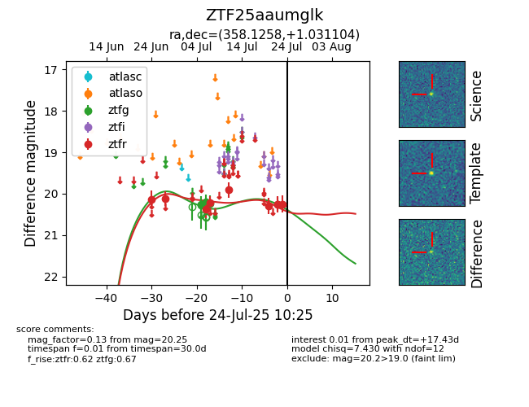

Target ZTF25aaumglk at 2025-07-24 10:25, see:
FINK: fink-portal.org/ZTF25aaumglk
Lasair: lasair-ztf.lsst.ac.uk/objects/ZTF25aaumglk
ALeRCE: alerce.online/object/ZTF25aaumglk
alt names
ZTF25aaumglk (ztf,fink)
coordinates:
equatorial (ra, dec) = (358.1258,+1.03110)
galactic (l, b) = (93.8359,-58.47139)
photometry
last ztfg=20.24, ztfr=20.25
4 ztfg, 9 ztfr detections
